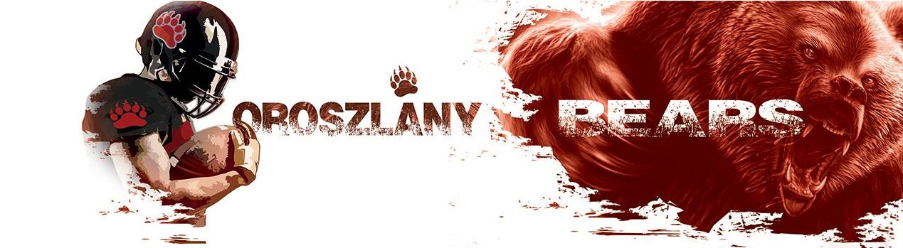
A csapatról:
Az Oroszlány Bears a 2018 októberében alakult Oroszlányiak Városi Sport Klubjának amerikai football szakosztálya. A városban a 2000-es évek közepén már volt kísérlet amerikai football csapat alakítására Moles néven, de hosszabb távon nem sikerült az építkezés. Néhány, lelkes alapító mégis úgy gondolta, hogy van a sportágra igény valamint tömegbázis Oroszlányban és belevágott a toborzásba. Ez annyira jól sikerült, hogy néhány hónap elteltével büszkén mondhatjuk, hogy közel hatvan fővel működik a szakosztály, szinte kizárólag helyi sportolókkal. Formálódó felnőtt tackle csapatunk mellett, U13 és U16 korosztályban is versenyeztetjük fiataljainkat flag footballban, továbbá e szakágban is rendelkezünk felnőtt gárdával.
Edzések:
Az edzések időpontjai:
- Kedd: 1700 - 1900
- Csütörtök: 1700 - 1900
- Szombat: 1300 - 1600
Az edzések helye: Hamvas Béla Gimnázium tornaterem
Mérkőzések:
HIPPOS vs Wolves II.
0 - 35
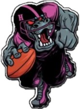
VS
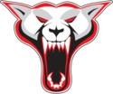
Időpont:
2023.06.10 Szombat, 15:00Helyszín:
Oroszlányi műfüves focipálya -Fekete István Sportcentrum
Visszanézés:
A közvetítést visszanézheti itt:HIPPOS vs Cowbells II.
14 - 23
VS
Időpont:
2023.05.21 Vasárnap, 15:00Helyszín:
Taszár, Kossuth Lajos u. 4. SportpályaVisszanézés:
A közvetítést visszanézheti itt:Képek:
Flag csapat közös edzése Diósdon a "Szentekkel"
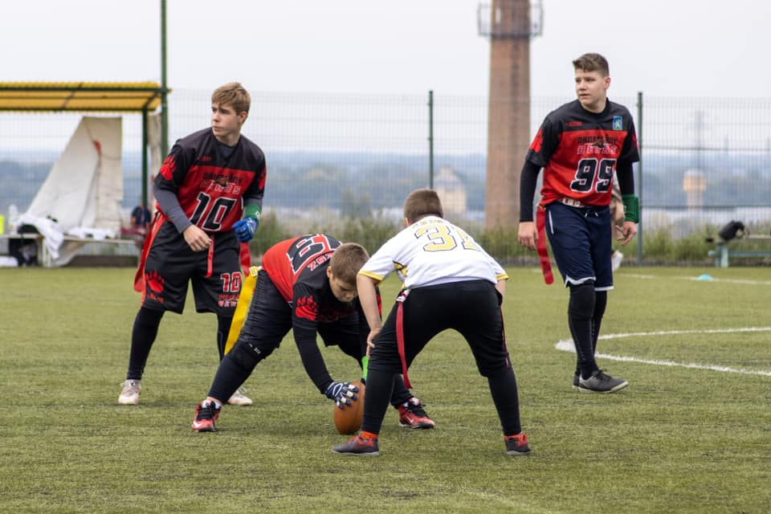
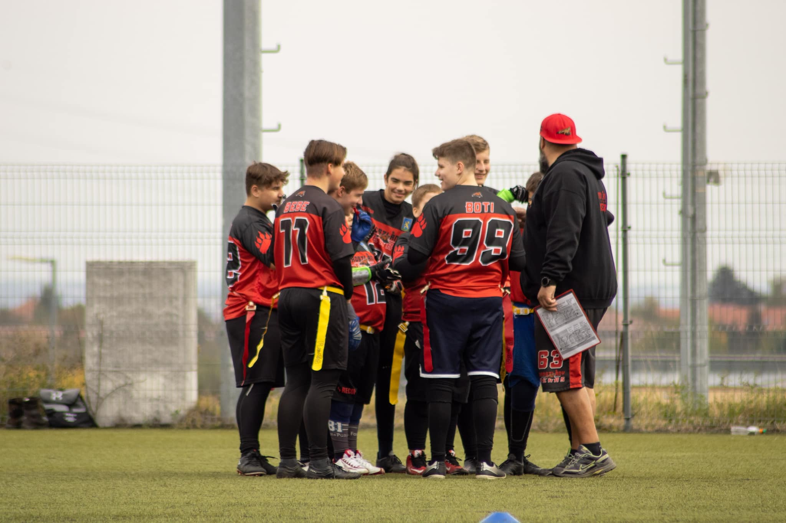
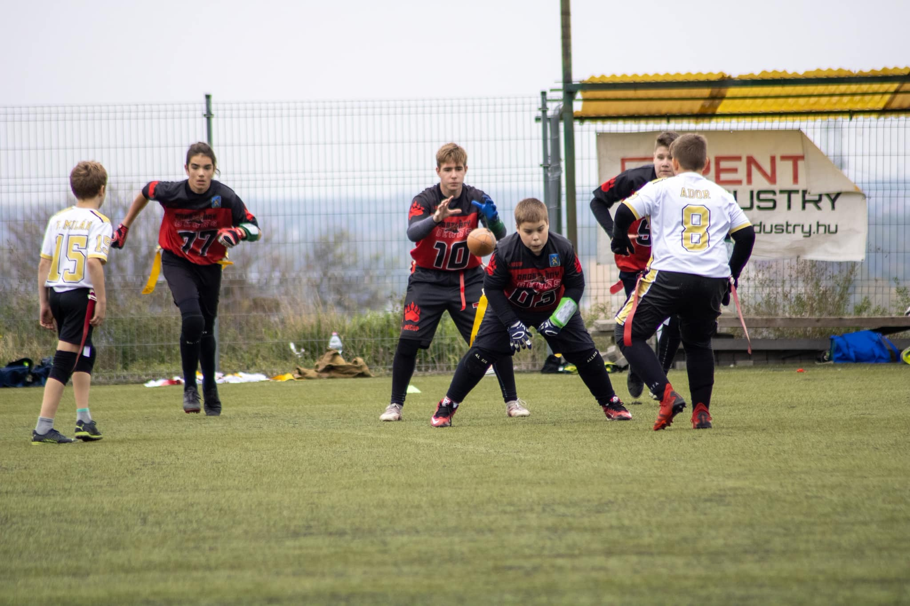
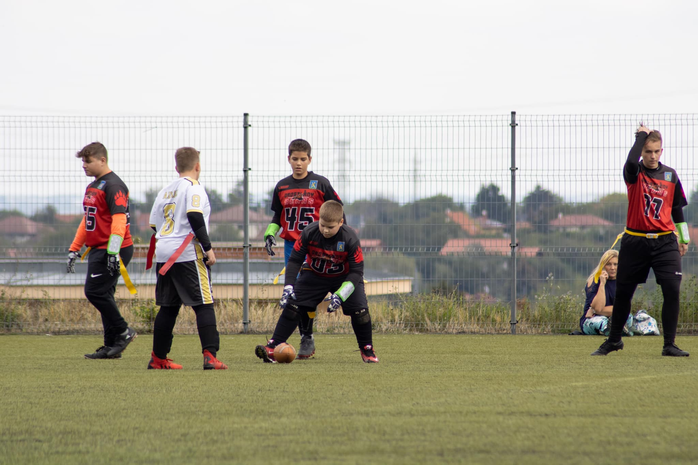
Flag mérkőzés Diósdon a "Szentekkel"
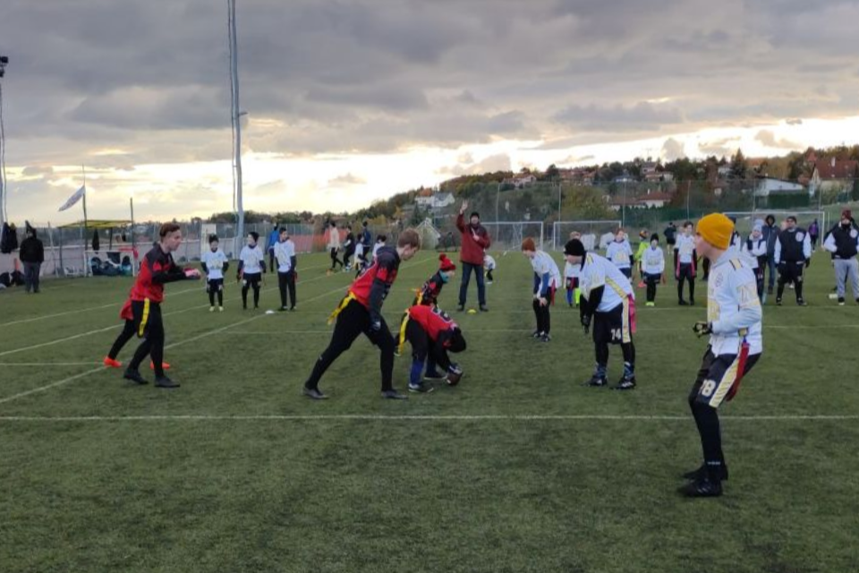
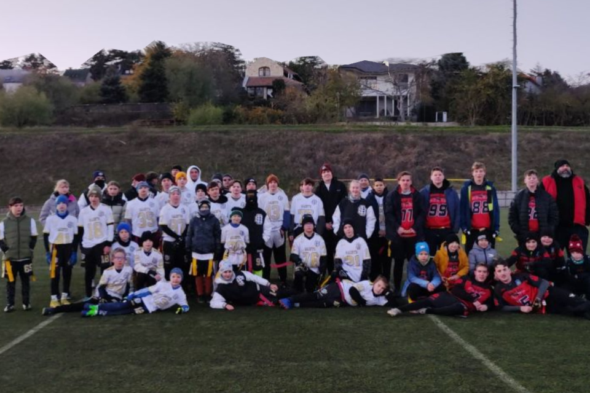
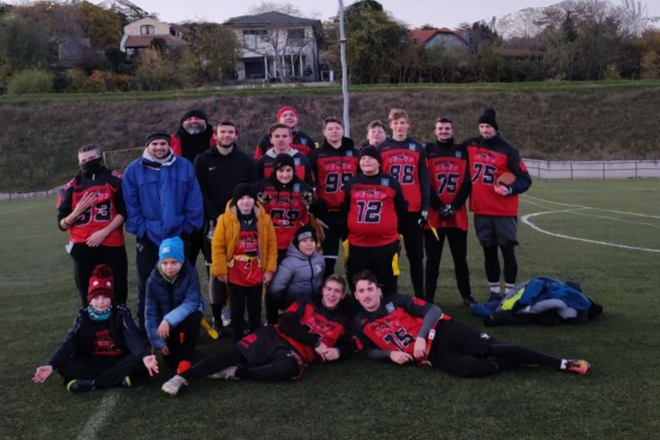
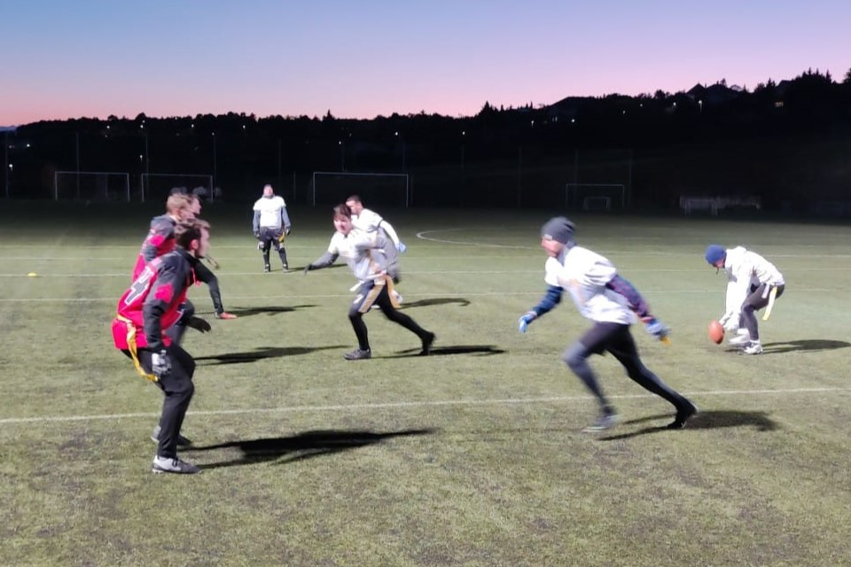